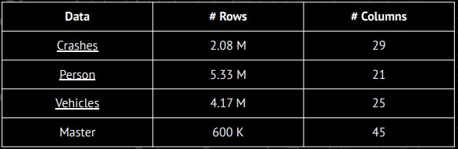
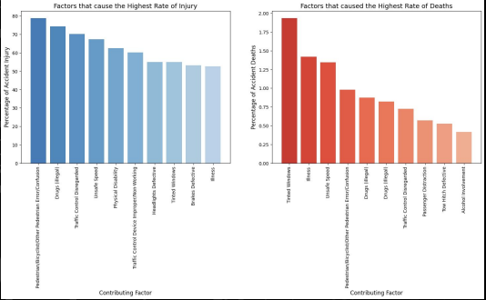
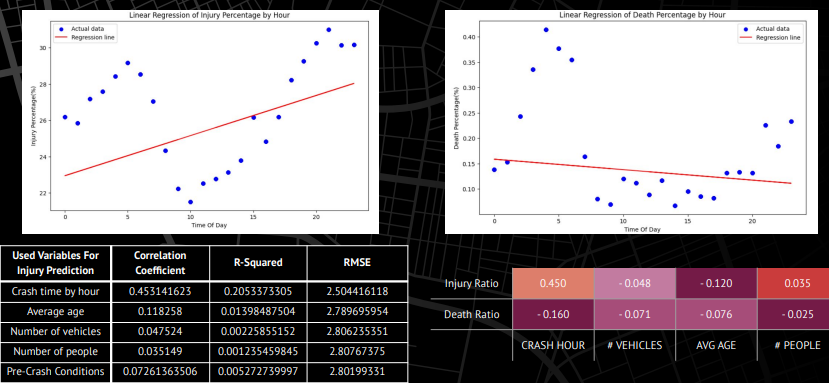
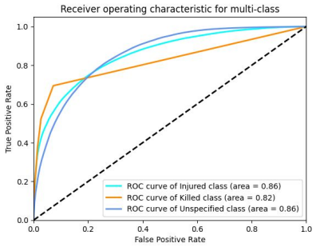
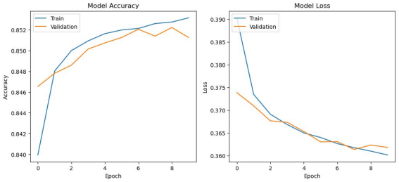

Overview
This project analyzes and predicts traffic-injury outcomes in New York City using a progression of machine-learning models. It runs from raw-data cleaning through exploratory analysis to model comparison, with the goal of identifying high-risk conditions and the factors that drive injury severity.
Workflow
Data cleaning
The NYC OpenData traffic set started at ~6.5M rows and was refined to ~850k usable records — handling missing values, removing irrelevant features, and transforming fields into a model-ready format.

Exploratory data analysis
EDA surfaced patterns and correlations across variables such as time of day, location, and conditions, establishing which features carried predictive signal.

Linear regression
A linear model set an interpretable baseline, evaluated with R-squared and mean squared error. It lagged the ensemble and deep models, confirming the relationships were not predominantly linear.

Random forest
A random forest captured non-linear structure and exposed feature importance, offering robustness on the large feature set.

Neural network
A neural network modeled deeper interactions, measured on accuracy, precision, and recall.

Findings
For predicting party injury level, the neural network slightly outperformed the random forest — 85% vs. 82% accuracy. The network was stronger at complex patterns while the forest offered robustness and interpretability; linear regression trailed both, reinforcing that the task rewards more expressive models. Both top models have headroom with more data and tuning.